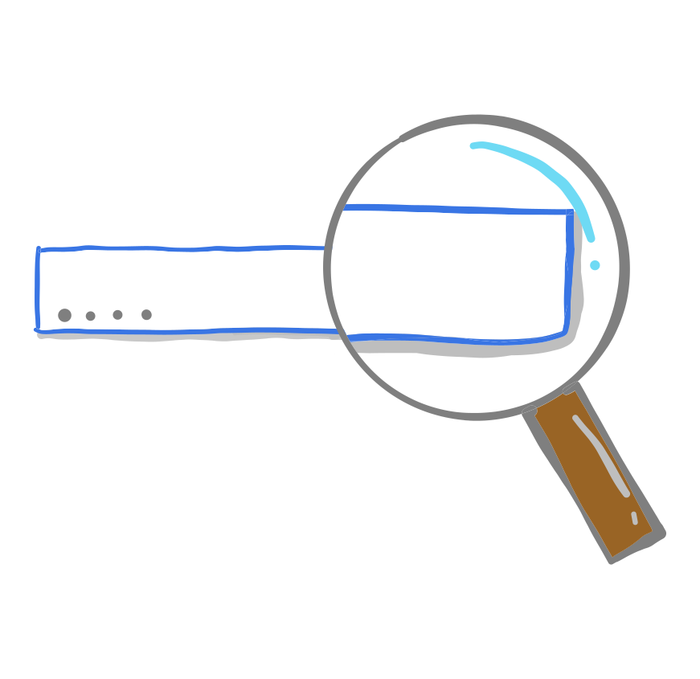
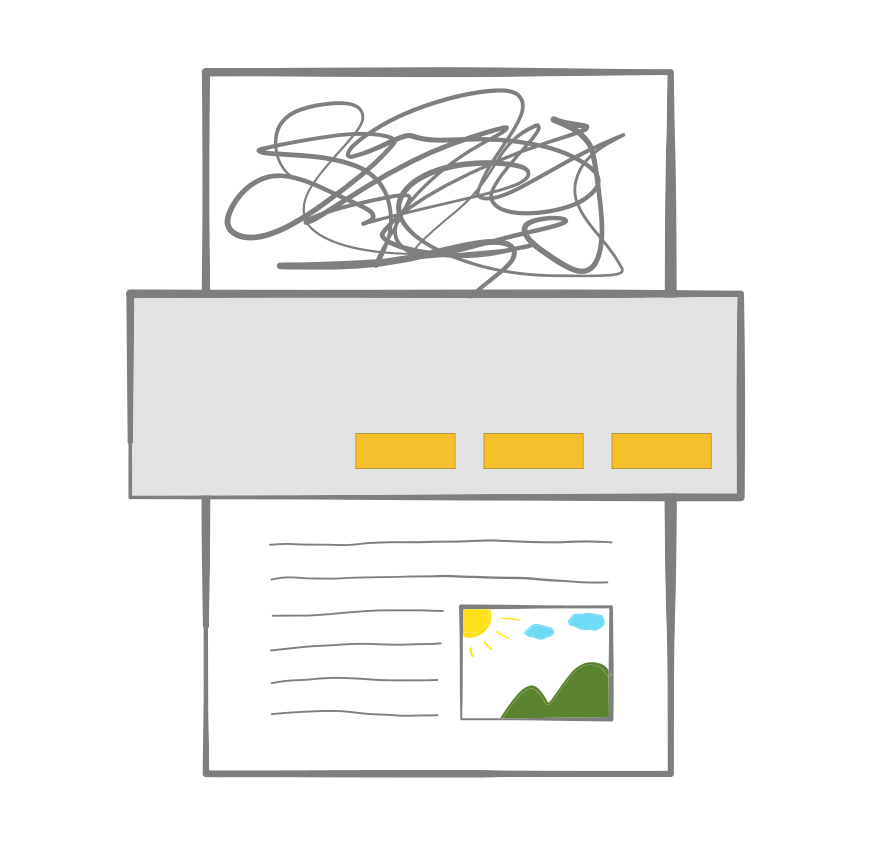
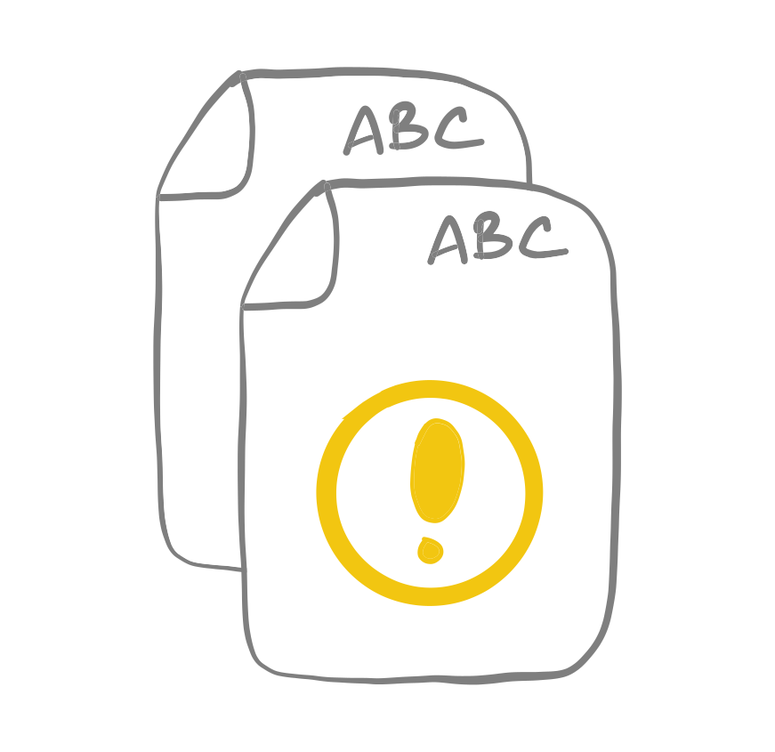

Upload your files like never before
Drag-n-drop your files.
GoldFynch lets you drag-and-drop your files directly into your browser window. Yes, your browser window! No need to install extra software or ask for custom uploads.
Upload any type of file, whatever size.
GoldFynch’s web-based uploader processes even the largest of archives. You can upload whole folders too.
Got compressed files? We'll take care of it.
GoldFynch handles most kinds of archives: ZIPs, PSTs, MBOXs and even other formats you didn’t know you could view.
Review Documents Quickly & Securely
View files in your browser.
Never leave your browser window, view all your files in GoldFynch. No app switching, no productivity loss.
Keep your files on the Cloud.
No need to download files to view and review them; with GoldFynch's in-built viewer, you never have to worry about downloading and using an external program.
More Secure.
Never having to download files to view means you'd never lose track of them. Keep your files at one place, keep them secure.
Searching is Simple, efficient and fast
Get quick results.
GoldFynch lets you search your files like you search the internet. Quickly sort through documents, emails, images, and many other formats.
Get accurate results.
GoldFynch’s relevance engine finds you what you’re looking for faster and without any complex queries.
Refine your results incrementally.
Narrow in on the information you need. Progressively search within search results to find what you’re looking for.
Automated OCR
Documents are automatically processed.
GoldFynch detects scanned images or even PDFs of scanned images and automatically converts them into the right format.
Document processing is free.
GoldFynch’s state-of-the-art OCR comes standard with all plans. You never have to worry about paying extra.
Just Upload and Go
GoldFynch is designed to be completely automatic. Never worry about the kinds and types of documents you're uploading. Just upload and GoldFynch will handle them for you.
Duplicate files detected automatically
GoldFynch detects duplicates early.
It will warn you of duplicates even before you upload files.
GoldFynch detects near-duplicates too.
It will also tell you about similar (though not same) documents, and lets you decide what to do with them.
Automatic Data Classification
Automatically find Subjects of Interest
GoldFynch will automatically find dates, organizations, people, and locations referred to in a document. Its advanced natural language based analyzers save you effort and time.
Zero Learning Curve
GoldFynch is intuitive
Its interface is modern, rich, and carefully designed. No distracting software quirks.
You don’t need technical know-how.
Just work your case and behind the scenes GoldFynch handles a range of complex tasks, like Data Management, and Sharing & Access Control.
You won’t need extensive training
No hefty training fees. No complicated documentation. Get up-and-running in minutes.
Completely Cloud Based
GoldFynch runs completely off the Cloud
You don't have to install software on your computer. You won't have to install updates either. Your data is always with you. Access it anytime.
Access it whenever, wherever
You data is always available. We take care of the backups and make sure it's always accessible'
Bank-Grade Security
Your data is protected by state-of-the-art security. It's only accessible by you.
Seamless Transition Into GoldFynch
No more load files
But if you have them, GoldFynch will handle them. And if you need them, it will export them for you.
Smooth GoldFynch Transition
GoldFynch integrates and processes the years of data you’ve accumulated with your current case management software.
Honest Billing
No Hidden Fees, No Unnecessary Charges
Just create a case and pay the fixed monthly cost. You never have to worry about extra storage or processing charges.
Simple and Predictable Pricing
Cases have fixed prices, so it's easy for you to manage costs.
Easy Upgrades
GoldFynch will track your plan usage and as your needs grow it will show you how to upgrade your case’s plan.
All Inclusive Pricing
Everything Included
When you sign up for GoldFynch you get everything it has to offer. You never have to pay to unlock added features. Yes, it includes automatic OCR!
Get New Features Automatically
GoldFynch is continuously evolving. And you automatically get access to new features as they are developed and become available.